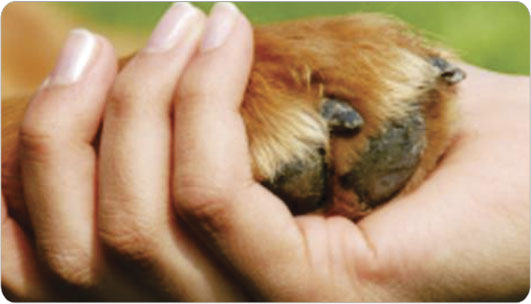

PRECISO DE AJUDA
Não há nada mais significativa do que a união de forças pela vida! Por isso é que a Cãopartilhe alegra-se ao saber que este sentimento foi despertado em alguém e agradece pela oportunidade de receber a missão de, quando menos, orientar
com o foco na conscientização e a atuação prática limitada pelas condições de estrutra (a ONG não mantém abrigo) e recursos, não é sempre possível à Cãopartilhe prestr socorro e atender à todos os pedidos de ajuda encaminhados. Por isso é importante que cada um se mobilize em ações que possam levar ao amparo de animais que se encontrem em sofrimento.
